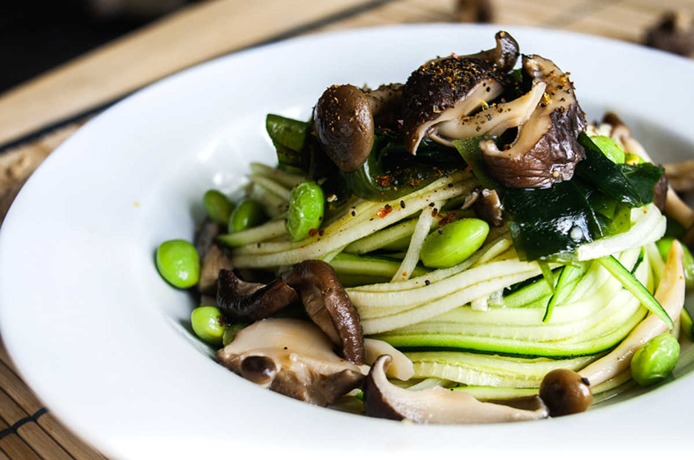

mushroom zucchini pasta
4 servings — 20 minutes
As much as I love pasta, i like to vary my food a lot day to day. Once in a while, I like to make zucchini noodles! They're ready in an instant, and are delicious when topped with a two-mushroom velouté sauce.
This meal is also green on green, most of the ingredients are different shades of the same colour. Fun.
What other green things can I add to this? Wakame! I don't always have fresh greens in my fridge, when I don't, I use wakame. It's handy to have around, it keeps for a long time and doesn't require a lot of prep. Wakame is also a good source of Iodine.
Edamame is another green food that I like. I have the frozen, de-shelled kind in my fridge. It saves a lot of time.
Mushrooms aren't green but they do add a TON of flavour to sauces. Shiitake mushrooms have a lot of flavour, shimeji mushrooms have a subtle taste but look nice in a dish.
 wakame 30 g
wakame 30 g shiitake 5-6
shiitake 5-6 zucchini 4
zucchini 4
veggie noodles and toppings
- Rehydrate 30 g (2 tbsp) of wakame in water, drain and set aside.
- Cut stems off of 5-6 of dried shiitake mushrooms, rehydrate by pouring boiling water over them. Keep them submerged for 30 min, or up to 1 hour. It's better to rehydrate them overnight, for a minimum of 8 hours. If you do this, the flavour will be stronger, but if you're in a rush, boiling water is fine. If you have fresh shiitake, you can also skip this step.
- Cut 4 medium-sized zucchinis thinly using a julienne peeler or knife. Place in bowls. I don't always cook my zucchini, but if you prefer a warm version sauté them in a pan.
 olive oil 30 ml
olive oil 30 ml all purpose flour 30 g
all purpose flour 30 g vegetable bouillon 475 molds
vegetable bouillon 475 molds shimeji 50 g
shimeji 50 g edamame 50 g
edamame 50 g shichimi togarashi 5 g
shichimi togarashi 5 g
sauce
- Put 30 ml (2 tbsp) of olive oil in a saucepan over medium heat, whisk in 30 g (2 tbsp) of all purpose flour. Stir until it's completely absorbed by the oil. Let roux cook for a minute or so.
- Stir in 475 ml (2 cups) of vegetable bouillon, bring heat up to a boil and then lower to a simmer. Add a 5-6 of shiitake mushrooms, a 50 g of shimeji mushrooms and a 50 g (~1/3 cup) of shelled edamame to the sauce.
- Let cook for 10 minutes.
- When cooked, season sauce with salt and black pepper.
- Add the re-hydrated wakame and serve over zucchini pasta. Season with shijimi togarashi!